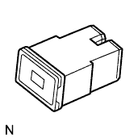
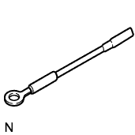
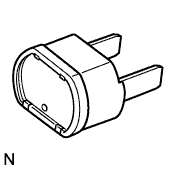
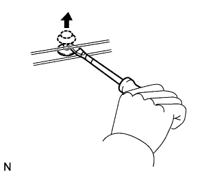
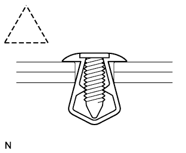
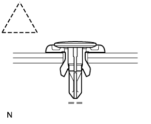

HƯỚNG DẪN SỬA CHỮA > LƯU Ý |
| 1.CÁC GỢI Ý SỬA CHỮA CƠ BẢN |
LƯU Ý VỚI CÁC THAO TÁC
| 1 | Trang phục |
|
| 2 | Bảo vệ xe | Sử dụng tấm phủ lưới che két nước, tấm phủ sườn, tấm phủ ghế và tấm phủ sàn xe trước khi bắt đầu công việc. |
| 3 | Vận hành an toàn |
|
| 4 | Chuẩn bị dụng cụ và đồng hồ đo | Trước khi bắt đầu làm việc, chuẩn bị giá để dụng cụ, SST, đồng hồ đo, dầu và phụ tùng dùng để thay thế. |
| 5 | Các tháo tác Tháo và Lắp, Tháo rời và Lắp ráp |
|
| 6 | Các chi tiết tháo ra |
|
KÍCH VÀ ĐỠ XE
Cẩn thận khi kích và đỡ xe. Đừng quên kích và đỡ xe ở vị trí thích hợp.
CÁC CHI TIẾT ĐƯỢC BÔI KEO
Các chi tiết được phủ keo là các bulông và đai ốc... được bôi keo phòng lỏng tại nhà máy.
Nếu vặn chặt lại, nới lỏng hay dịch chuyển các chi tiết được bôi keo vì bất kỳ nguyên nhân gì, phải bôi lại chúng bằng loại keo tiêu chuẩn.
Khi bôi lại keo cho các chi tiết được phủ keo, làm sạch keo cũ và thổi khô bằng khí nén sau đó bôi một lớp keo làm kín đúng tiêu chuẩn vào bulông, đai ốc hay ren.
Tuỳ theo loại keo làm kín sử dụng, có thể có những trường hợp cần phải để keo trong một khoảng thời gian nhất định cho đến khi nó cứng lại.
GIOĂNG
Khi cần thiết, dùng keo làm kín trên gioăng để tránh rò rỉ.
BULÔNG, ĐAI ỐC VÀ VÍT
Tuân thủ chặt chẽ tất cả các thông số về mômen xiết bulông. Luôn dùng cân lực.
CẦU CHÌ
Khi kiểm tra cầu chì, kiểm tra rằng dây cầu chì không bị đứt.
Khi thay các cầu chì, nhớ rằng cầu chì mới phải có trị số dòng thích hợp. Không được sử dụng cầu chì có trị số dòng lớn hơn hay thấp hơn.
| Minh hoạ | Ký hiệu | Tên chi tiết | Viết Tắt |
 |  | CẦU CHÌ | CẦU CHÌ |
 |  | CẦU CHÌ DÒNG TRUNG BÌNH | CẦU CHI - M |
|  |  | CẦU CHÌ DÒNG CAO | H-FUSE |
|  |  | THANH CẦU CHÌ | FL |
|  | BỘ NGẮT MẠCH | CB |
CÁC KẸP
Các phương pháp để tháo và lắp các kẹp tiêu chuẩn dùng trong các bộ phận của thân xe được chỉ ra trong bảng sau.
| Hình dạng (Ví dụ) | Minh hoạ | Các quy trình |
 |
| |
 |  |
|
 |  |
|
 |
| |
|  |
| |
|  |  |
|
CÁC VẤU
Các phương pháp để tháo các kẹp điển hình được dùng trong các bộ phận của thân xe được chỉ ra trong bảng sau.
| Hình dạng (Ví dụ) | Minh hoạ | Các quy trình |
 |
| |
 |  |
|
 |  |
|
THÁO VÀ LẮP CÁC ỐNG CHÂN KHÔNG
Để tháo các ống chân không, cầm và kéo vào đầu ống, không kéo vào phần giữa ống.
 |
Khi tháo các ống chân không, hãy dùng các thẻ phân biệt để biết vị trí khi lắp lại.
Sau khi hoàn tất công việc, kiểm tra lại lần nữa các ống chân không để xem chúng lắp chính xác chưa. Một nhãn dán dưới nắp capô cho biết sơ đồ lắp chuẩn.
Khi dùng đồng hồ đo chân không, không bao giờ lắp ống vào một đầu nối có kích thước quá lớn. Nếu ống bị giãn, thì sẽ gây rò khí. Hãy dùng cút nối giảm kích thước nếu cần thiết.
XIẾT BẰNG CÂN LỰC CÓ TAY NỐI DÀI
Hãy dùng công thức dưới đây để tính toán các giá trị mômen xiết đặc biệt cho trường hợp dùng kết hợp SST hay dụng cụ nối dài với cờlê cân lực.
| T' | Đọc giá trị mômen xiết {N*m (kgf*cm, ft.*lbf)} |
| T | Mômen xiết tiêu chuẩn {N*m (kgf*cm, ft.*lbf)} |
| L1 | Chiều dài của SST (cm) |
| L2 | Chiều dài của tay cân lực (cm) |
| 2.VỚI XE CÓ HỆ THỐNG HỖ TRỢ GIẢM VA ĐẬP |
CÁP XOẮN
Vô lăng phải được lắp chính xác vào trục lái với cáp xoắn ở vị trí trung gian, vì có thể xảy ra tuột cáp và hư hỏng khác. Hãy tham khảo thông tin về việc lắp chính xác vô lăng.
CỤM TÚI KHÍ
Cụm túi khí với mặt vô lăng
Luôn đặt túi khí mới tháo ra hoặc đang còn mới sao cho mặt trên quay lên trên. Nếu để cụm túi khí với hướng lắp túi khí quay xuống dưới có thể dẫn đến tai nạn nghiêm trọng do túi khí phát nổ. Tương tự, không được đặt bất cứ vật gì lên phía trên của cụm túi khí.
Không bao giờ đo điện trở của ngòi nổ túi khí. Điều này sẽ làm cho túi khí phát nổ và dẫn đến chấn thương nhiêm trọng.
Không được bôi mỡ vào cụm túi khí
Lưu kho cụm túi khí ở nơi có nhiệt độ duy trì dưới 93°C (200°F), độ ẩm không cao và không bị nhiễu điện.
Khi dùng máy hàn điện trên xe, ngắt các giắc nối ECU túi khí. Những giắc nối này có lò xo ngắn mạch. Đặc điểm này làm giảm khả năng phát nổ túi khí do dòng điện vào ngòi nổ.
Khi huỷ xe hoặc cụm túi khí, bạn phải huỷ túi khí bằng cách dùng SST. Hãy kích nổ túi khí ở địa điểm an toàn cách xa vùng nhiễu điện.
CỤM ĐAI AN TOÀN PHÍA NGOÀI VÓ BỘ CĂNG ĐAI KHẨN CẤP
Không bao giờ đo điện trở của đai an toàn bên ngoài. Điều này sẽ làm cho bộ căng đai khẩn cấp sẽ kích hoạt và dẫn đến chấn thương nhiêm trọng.
Không bao giờ được lắp đai an toàn bên ngoài trên xe khác.
Lưu kho bộ căng đai khẩn cấp ở nơi có nhiệt độ duy trì dưới 80°C (176°F), độ ẩm không cao và không bị nhiễu điện.
Khi dùng máy hàn điện trên xe, ngắt các giắc nối của ECU túi khí (2 chân). Những giắc này có lò xo ngắn mạch. Đặc điểm này làm giảm khả năng phát nổ bộ căng đai khẩn cấp do dòng điện vào ngòi nổ.
Khi huỷ xe hoặc đai an toàn bên ngoài, bạn phải huỷ bộ căng đai khẩn cấp bằng cách dùng SST. Hãy kích nổ túi khí ở địa điểm an toàn cách xa vùng nhiễu điện.
Vì đai an toàn phía ngoài nóng sau khi bộ căng đai khẩn cấp kích hoạt, hãy đợi cho nó đủ nguội trước khi huỷ. Không bao giờ được dội nước để làm nguội đai an toàn bên ngoài.
Không được bôi mơ, dung môi, dầu hay nước lên đai an toàn bên ngoài.
CỤM CẢM BIẾN TÚI KHÍ
Không bao giờ dùng lại bộ cảm biến túi khí khi gặp tai nạn mà SRS đã phát nổ.
Giắc nối của bộ cảm biến túi khí phải được tháo và lắp với cảm biến được lắp trên sàn xe. Nếu giắc nối của bộ cảm biến túi khí được tháo và lắp trong khi cảm biến túi khí không được lắp trên sàn xe, nó có thể gây ra kích nổ hệ thống hỗ trợ giảm va đập ngoài ý muốn.
Công việc phải đựơc tiến hành sau 90 giây kể từ lúc khoá điện được tắt về vị trí OFF và cáp âm (-) được tháo ra khỏi ắc quy, thậm chí nếu chỉ nới lỏng bulông bắt bộ cảm biến túi khí.
DÂY ĐIỆN VÀ GIẮC NỐI
Dây điện của SRS được gắn chung với bộ dây điện của bảng táplô. Tất cả các giắc nối cho hệ thống cũng là màu vàng. Nếu các dây đIện của SRS bị đứt, phải sửa chữa hay thay thế nó.
| 3.ĐIỀU KHIỂN ĐIỆN TỬ |
THÁO RA VÀ LẮP LẠI CỰC ẮC QUY
Tháo cáp âm (-) khỏi ắcquy trước khi thực hiện các công việc về điện để tránh các hư hỏng do chập cháy.
Khi tháo cáp ắcquy, hãy tắt khoá điện OFF và công tắc đèn pha OFF, và nới lỏng hoàn toàn đai ốc bắt cáp. Sau đó nhấc thẳng cáp lên.
Khi cáp ắcquy bị tháo ra, tất cả các bộ nhớ như đồng hồ, radio, mã chẩn đoán v.v. sẽ bị xoá. Nên trước khi tháo, hãy kiểm tra và ghi chép lại.
THÁO TÁC VỚI CÁC CHI TIẾT ĐIỆN TỬ
Không mở nắp hay vỏ của bộ ECU trừ khi thật cần thiết. Nếu các cực của IC bị chạm, IC có thể bị phá hỏng do tĩnh điện.
Không được kéo các dây điện khi ngắt các giắc nối điện. Hãy kéo vào chính giắc cắm.
Cẩn thận không làm rơi các chi tiết điện như cảm biến hay rơle. Nếu đánh rơi chúng trên nền cứng, phải thay thế bằng cái mới.
Khi rửa động cơ bằng hơi nước, hãy bảo vệ các chi tiết điện, lọc gió và các chi tiết liên quan đến hệ thống kiểm soát khí xả khỏi bị dính nước.
Không bao giờ dùng súng vặn bằng khí nén để tháo hay lắp các công tắc hay các cảm biến nhiệt độ nước.
Khi đo điện trở của một giắc nối dây, hãy cắm đầu đo của dụng cụ đo một cách cẩn thận để tránh làm cong các cực của giắc.
| 4.THÁO VÀ LẮP CÁC BỘ PHẬN ĐIỀU KHIỂN NHIÊN LIỆU |
ĐỊA ĐIỂM ĐỂ THÁO VÀ LẮP CÁC CHI TIẾT HỆ THỐNG NHIÊN LIỆU
Nơi đó phải là nơi thông thoáng tốt và không có bất kỳ vật phát lửa như máy hàn, máy mài, khoan, môtơ điện xung quanh.
Không bao giờ được làm việc ở trong hầm hay tương tự vì nhiên liệu bay hơi sẽ tích tụ lại trong vị trí như vậy.
THÁO VÀ LẮP CÁC CHI TIẾT HỆ THỐNG NHIÊN LIỆU
Chuẩn bị bình cứu hoả trước khi bắt đầu công việc.
Để tránh tĩnh điện, lắp dây nối mát vào bình thay nhiên liệu, xe và bình nhiên liệu, không được phun nước vào khu vực xung quanh. Cẩn thận khi làm việc ở khu vực này, vì bề mặt này dễ gây trượt. Không được làm sạch xăng bắn ra bằng nước, vì làm thế sẽ làm xăng loang ra có thể gây ra nguy hiểm.
Tránh dùng các môtơ điện, đèn làm việc hay các thiết bị điện khác do chúng có thể gây ra tia lửa hay nhiệt độ cao.
Không bao giờ dùng búa sắt do chúng có thể gây nên tia lửa.
Vứt riêng giẻ dính nhiên liệu ra một nơi dùng thùng chống cháy.
| 5.THÁO VÀ LẮP CÁC BỘ PHẬN NẠP KHÍ CỦA ĐỘNG CƠ |
Nếu có bất kỳ mẩu kim loại nào bị lẫn vào trong đường nạp, nó sẽ làm hỏng động cơ.
Khi tháo và lắp các chi tiết của hệ thống nạp, bịt đầu của các chi tiết vừa tháo ra từ động cơ bằng giẻ sạch hay băng dính.
Khi lắp các chi tiết của hệ thống nạp, kiểm tra rằng chúng không bị lẫn các mẩu kim loại.
| 6.THAO TÁC VỚI CÁC KẸP ỐNG |
Trước khi tháo ống, kiểm tra độ sâu của phần cắm vào và phần kẹp để lắp lại chúng được chắc chắn.
Hãy thay những kẹp bị biến dạng hay bị cong bằng chiếc mới.
Thay kẹp đã bị biến dạng hay cong, lắp kẹp lên ống ở vị trí có vết kẹp cũ.
Đối với các kẹp đàn hồi, điều chỉnh bằng cách ấn vào như hướng chỉ ra bởi mũi tên sau khi lắp ráp.
| 7.ĐỐI VỚI XE ĐƯỢC TRANG BỊ HỆ THỐNG LIÊN LẠC DI ĐỘNG |
Lắp ăngten càng xa ECU và các cảm biến của hệ thống điện tử trên xe càng tốt.
Lắp dây dẫn ăngten cách ECU và các cảm biến của hệ thống điện tử trên xe ít nhất 20 cm. Chi tiết về vị trí của ECU và các cảm biến, hãy tham khảo phần các bộ phận tương ứng.
Hãy để ăngten và ổ cuốn cách các dây điện khác càng xa càng tốt. Điều này tránh cho các tín hiệu của các thiết bị thông tin khỏi chịu ảnh hưởng đến thiết bị đến xe va ngược lại.
Kiểm tra rằng ăngten và dây dẫn ăngten được điều chỉnh chính xác.
Không lắp hệ thống liên lạc di động quá mạnh.
| 8.XE TRANG BỊ BỘ TRUNG HOÀ KHÍ XA |
Chỉ dùng xăng không pha chì.
Tránh chạy động cơ ở tốc độ không tải lâu hơn 20 phút.
Tránh thử đánh lửa bugi.
Thực hiện thử đánh lửa bugi chỉ khi thật cần thiết. Thử càng nhanh càng tốt.
Trong khi thử, không bao giờ tăng tốc động cơ.
Tránh đo áp suất nén của động cơ quá lâu. Việc thử áp suất nén của động cơ phải được thực hiện càng nhanh càng tốt.
Không cho động cơ hoạt động khi bình nhiên liệu đã gần hết. Điều này có thể làm cho động cơ bỏ máy và tạo thêm tải trọng phụ cho bộ lọc.